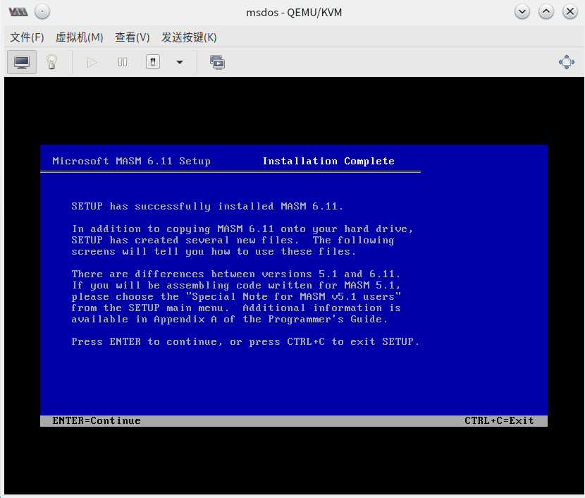
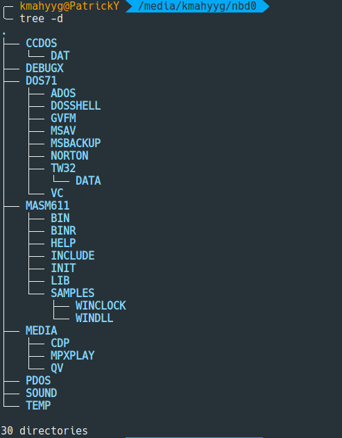
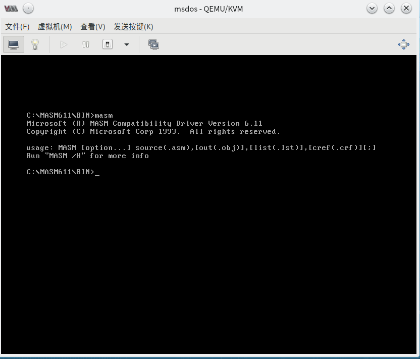
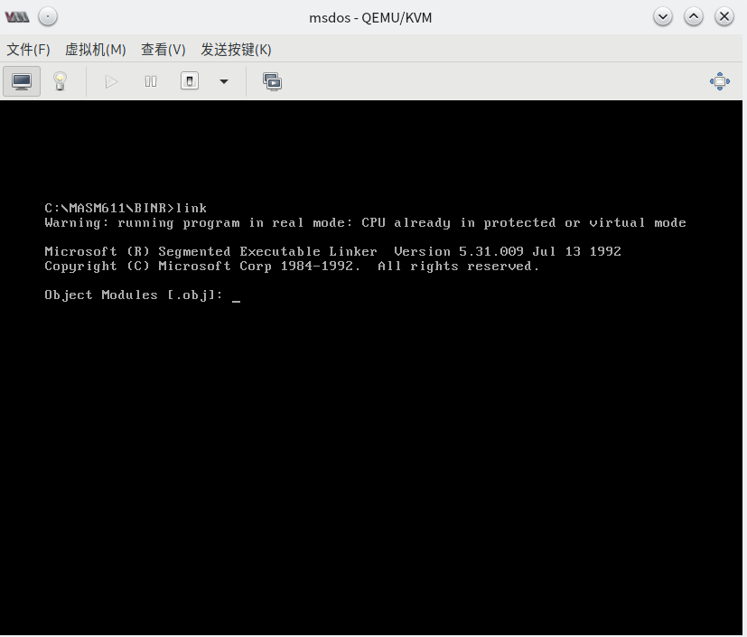
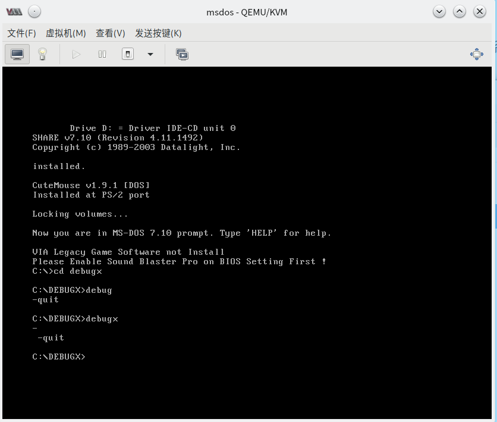

1.2 安装编译器、调试器和连接器
编译器 MASM 、 连接器 LINKER
挂载虚拟机镜像到实体机 （以 KVM 为例）
KVM 的默认磁盘镜像存储位置： /var/lib/libvirt/images
为了创建快照，我们在之前创建虚拟机时选择保持默认磁盘格式，即 *.qcow2 。由于我们目前能够下载的工具包均是已经解开的非磁盘镜像文件，我们需挂载磁盘以进一步写入文件。
请注意，下列命令中任何路径 必须 为 绝对路径
# lsmod | grep nbd // 检查所需内核模块是否挂载
# modprobe nbd // 挂载需要的内核模块
# qemu-nbd --connect=/dev/nbd0 /path/to/qcow2/image // 将镜像挂载为 Block 设备 （添加 --readonly 以保持只读）
# fdisk /dev/nbd0 -l // 检查镜像的分区
# mkder /media/mountpoint // 创建挂载点
# mount /dev/nbd0p1 /media/mountpoint // 将分区挂载到挂载点
解除挂载并断开设备连接：
# umount /media/mountpoint // 解挂载
# qemu-nbd --disconnect /dev/nbd0 // 断开设备连接
开始安装
打开文件管理器，新建一个文件夹，将安装包解压进去。如果你在 Linux 下操作，请注意，你需要使用 ROOT 权限 才能对挂载的文件系统进行读写。 写入完成后请务必解除挂载并断开设备连接，其他不再赘述。
接下来，请你使用 cd 等命令切换到安装文件目录，根据文字提示进行进一步安装。

本教程提供的 MASM 为完整版本，携带了 link.exe ，无需独立安装连接器。
最终目录结构如图所示：

安装完成



调试器 DEBUGX
本教程提供的 DEBUGX 为 原 DOS 中 DEBUG 程序的进阶修改版，直接将解压后得到的文件放入一个文件夹中，并复制到 DOS 系统根目录即可直接运行，无需安装。
请完成实验一
本章完
欢迎您在本文下方评论区留言与大家共享您的想法，联系作者请前往 Github 开启 Issue。